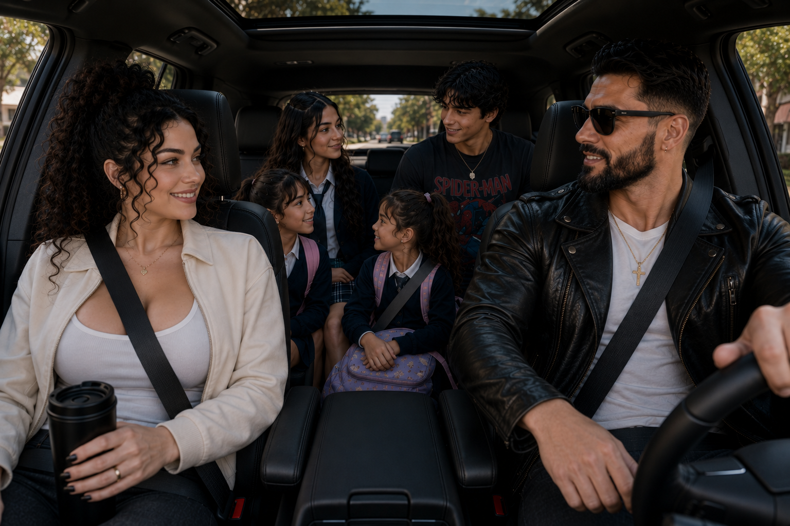
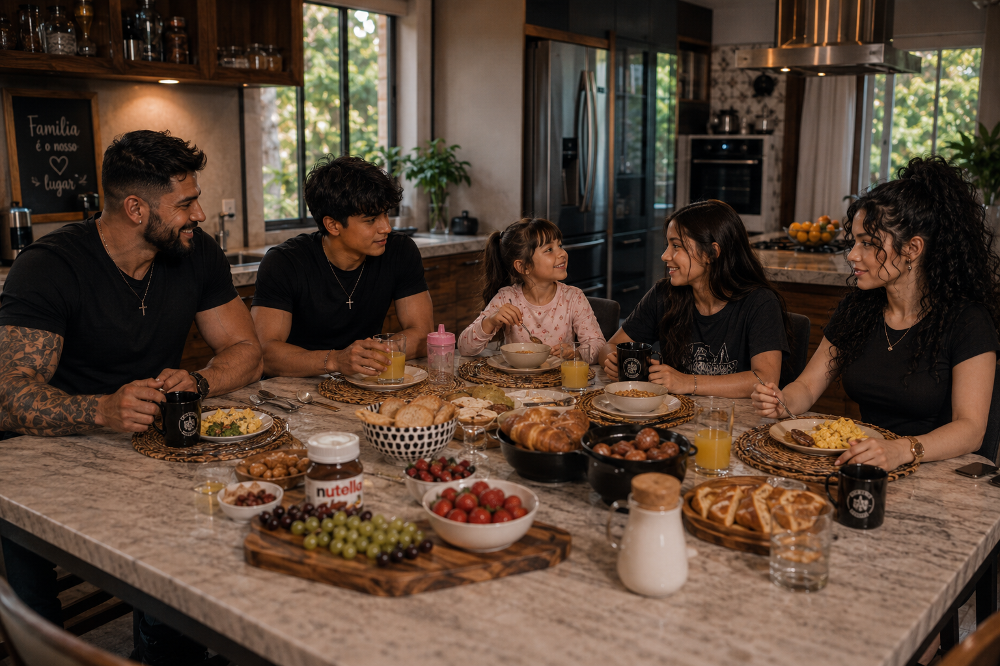
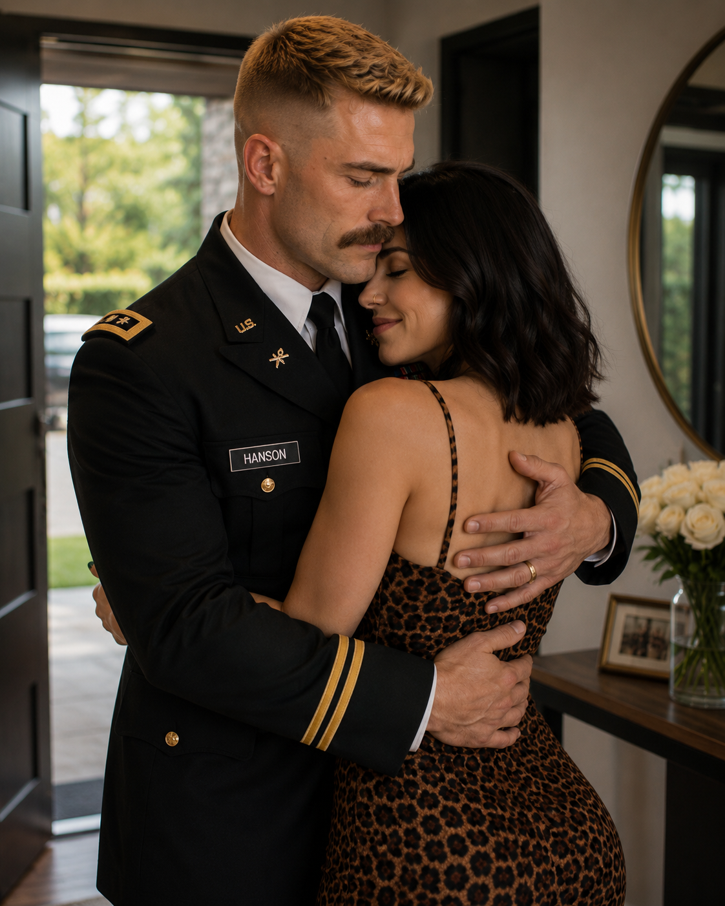
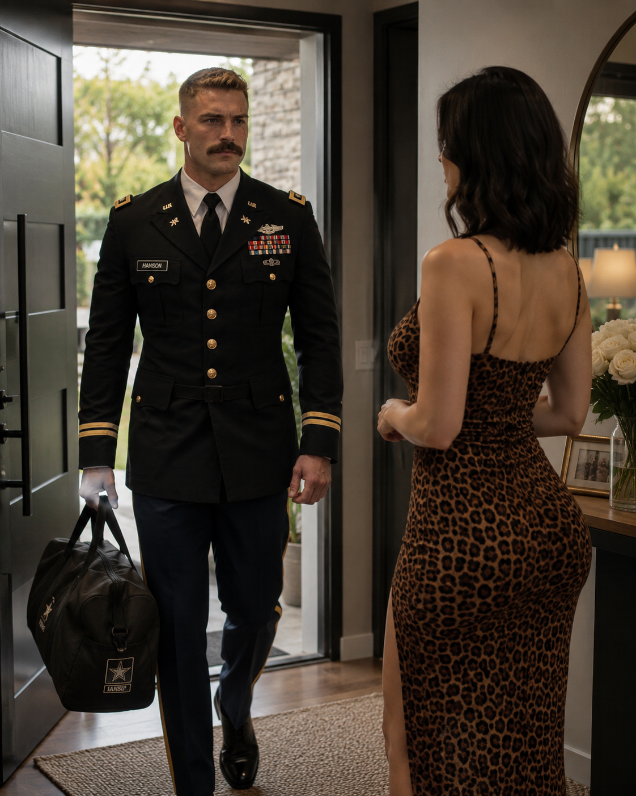

Arquivo visual // DD-PARALLEL
Vidas paralelas
Três famílias viviam rotinas completamente independentes. Não compartilhavam segredos, não frequentavam os mesmos lugares e não sabiam da existência umas das outras. Este arquivo preserva a última normalidade antes de seus caminhos serem atingidos pelo mesmo colapso.
Diretório de núcleos // antes do incidente
Selecione um arquivo
As fotografias foram agrupadas para evitar exposição simultânea. Abra um núcleo para consultar somente as evidências ligadas àquela família.


Família Bradock
A última manhã normal: casa, saída e deslocamento antes dos primeiros sinais.


Família Hanson
Memórias pessoais de James e Natasha preservadas antes do Dia D.
Família Jordan
Samuel, sua esposa e seus filhos aguardam documentação visual.
Evidências de uma vida anterior
Registros recuperados
Fotografias familiares, sociais e profissionais preservadas como evidências.
Eles não se conheciam. Não estavam no mesmo lugar. Mas, naquela manhã, o mesmo acontecimento começou a destruir a vida de todos.